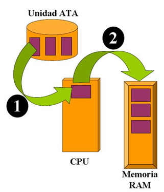
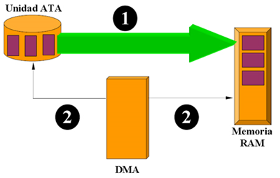

Modos de transferencia de un DD.
Aparte de la velocidad del disco duro y de la controladora la forma en que se transfieren los datos de ésta a la memoria decide también la velocidad del sistema.
Programed I/O (Pio Mode) : La transferencia de datos se desarrolla a través de los diferentes puerto I/O de la controladora que también sirven para la transmisión de comandos (IN / OUT). La tasa de transferencia está limitada por los valores del bus PC, y por el rendimiento de la CPU.
En este modo de transferencia, el procesador de la computadora se encarga de enviar todas las instrucciones de la unidad de disco duro, una a la vez. El procesador espera una respuesta a una instrucción, y a continuación, envía el siguiente, y así sucesivamente.
Para transferir del disco duro hacia la memoria RAM. Hay varias técnicas:
- PIO (Programed Input Output): Entrada / Salida programada.
Utiliza el microprocesador del sistema como intermediario para el intercambio de datos. Constituye el método de transferencia más antiguo.
Algunos modos de transferencia PIO son:
- Modo 1: 5,2 Mb/s
- Modo 2: 8,3 Mb/s
- Modo 3: 11,1 Mb/s
- Modo 4: 16,6 Mb/s

- DMA: Es la transferencia de datos desde el disco a la memoria evitando pasar por la CPU. La ventaja de usar el DMA es que se libera al procesador para trabajar en otras tareas mientras las transferencias de datos se realizan por otro lado. El DMA además de ser inflexible es lento, no se puede pasar de más de 2 Mb. por segundo.

Es un sistema pensado para transferir datos desde la memoria RAM hasta el disco duro, y viceversa, sin que el microprocesador tenga que intervenir en esta tarea, lo cual libera a la CPU para realizar otras tareas. Actualmente se utiliza el sistema UltraDMA, más conocido como UDMA. Hay varias versiones que se conocen por la velocidad máxima de transferencia que permiten:
- DMA-16 o Ultra-DMA: 16,6 Mb/s
- DMA-33 o Ultra-DMA-Mode-2, o Ultra-ATA/33: 33,3 Mb/s
- UDMA-66 o Ultra-DMA-Mode-4, o Ultra-ATA/66: 66,6 Mb/s
- UDMA-100 o Ultra-DMA-Mode-5, o Ultra-ATA/100: 100 Mb/s
- UDMA-133 o Ultra-DMA-Mode-6, o Ultra-ATA/133: 133 Mb/s
El modo de transferencia UDMA (Ultra Direct Memory Access) ha sido desarrollado para ofrecer discos duros de mayor ancho de banda y conexión al procesador para realizar otras tareas mientras las transferencias estaban en marcha. Usando UDMA, el procesador puede enviar un conjunto de instrucciones para la memoria principal (RAM) en el equipo, que luego completar la tarea sin la ayuda del procesador.